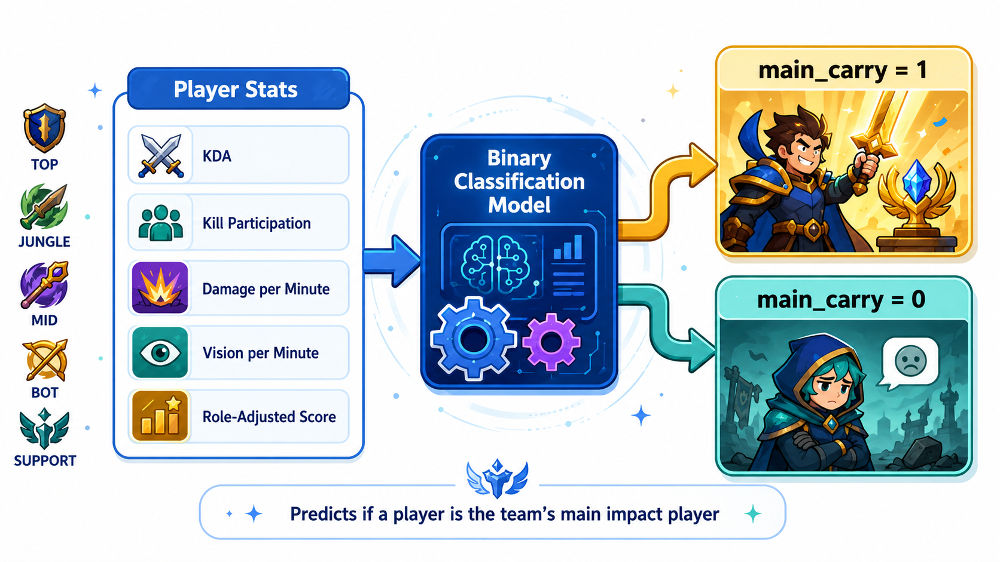

Measuring League of Legends role impact in 2025 professional esports
This project studies which League of Legends roles are most often labeled as the main impact player on winning teams.
Among winning teams, which role is most likely to be the main carry?
My first carry score focused too much on damage and gold. That made it unfair for supports, junglers, and players who impact the game through vision, objectives, and map pressure.
I tested whether all five roles carry equally often. If the null hypothesis were true, each role would be the main carry about 20% of the time.
9.70%
16.71%
27.34%
44.74%
1.51%
The p-value was about 0.0001, so I rejected the null hypothesis. This suggests some roles are much more likely to be labeled as the main carry.
I am building a classification model that predicts whether a player is the main impact player on their team.

I will start with Logistic Regression, then compare it to Random Forest and Gradient Boosting.